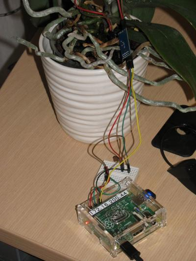
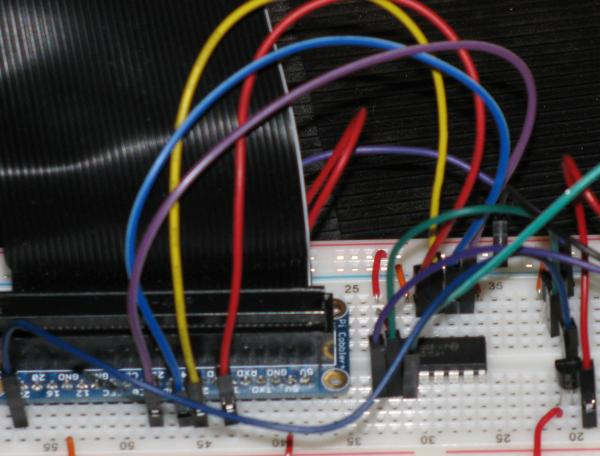
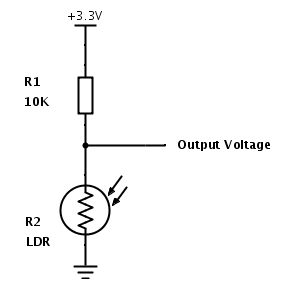
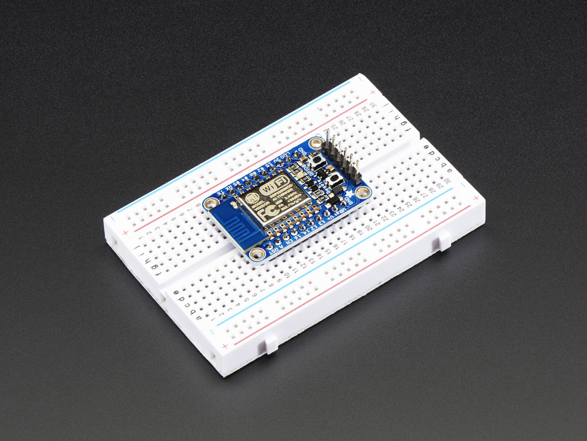

Tweeting plants
So everything got started with this. I wanted to be kept abreast about when my orchid needs watering. So I bought one of these devices

So everything got started with this. I wanted to be kept abreast about when my orchid needs watering. So I bought one of these devices
Works in two modes:
So I ended up with this
Using hygrometer in digital mode and hooking it up to tweeter via tweepy.

Raspberry Pi, unlike arduino, beaglebone does not have analogue IO pins.
MCP 3008 ADC chip with SPI interface# aptitude install python3-dev python3-rpi.gpio
VDD -- Power
VREF -- Analog voltage reference (used to change voltage scale)
AGND -- Analog Ground (used in precision circuitry), Connects to GND.
CLK -- Clock Pin
DOUT -- Data out from MCP3008
DIN -- Data in from Raspberry Pi
CN -- Chip select
| MCP 3008 | Raspberry Pi | Cable Color |
|---|---|---|
| VDD | 3.3V | Red |
| VREF | 3.3V | Red |
| AGND | GND | Black |
| CLK | #18 | Orange |
| DOUT | #23 | Yellow |
| DIN | #24 | Blue |
| CS | #25 | Violet |
| DGND | GND | Black |

The two pins from controller (HL-01) to the probe (YL-69) can be connected in any order.
Controller Pins
| HL-01 | Breadbord |
|---|---|
| A0 | CH0 |
| D0 | Not used in analog mode |
| GND | GND |
| VCC | 5V |
Run raspi-config
Advanced Options -> SPI
Would you like the SPI interface to be enabled? Yes
Would you like the SPI kernel module to be loaded by default? Yes
Reboot the pi.

def spi_readout():
SPICLK = 18
SPIMISO = 23
SPIMOSI = 24
SPICS = 25
# set up the SPI interface pins
GPIO.setup(SPIMOSI, GPIO.OUT)
GPIO.setup(SPIMISO, GPIO.IN)
GPIO.setup(SPICLK, GPIO.OUT)
GPIO.setup(SPICS, GPIO.OUT)
return readadc(potentiometer_adc, SPICLK, SPIMOSI, SPIMISO, SPICS)Potentiometer readings:
| Connection Type | Reading |
|---|---|
| Air | 1023 |
| Water | 520-580 |
| Shorted Pins | 40 |
| Soil watered 1 day ago | 520-560 |
Screw adjuster trigger point for digital reading does not affect the sensitivity of analog readings. However, once inserted the readings gradually decreased from initial 560 to 517 a few minutes later.

Collector -- Input Voltage
Base -- Control current
Emitter -- Output Voltage
def power_on():
GPIO.setup(POWER_PIN, GPIO.OUT)
GPIO.output(POWER_PIN, True)
def power_off():
GPIO.output(POWER_PIN, False)
if __name__ == "__main__":
power_on()
time.sleep(1)
print("Hygrometer value %d" % spi_readout())
time.sleep(1)
power_off()
GPIO.cleanup()Connection scheme:
Collector -- 3.3 V
Base -- Analog readout (to MCP3008 Pin #2)
Emitter -- Ground
def adc_to_temp(readout):
millivolts = readout * (3300.0 / 1024.0)
temp_c = ((millivolts - 100.0) / 10.0) - 40.0
return temp_cUsing gpiozero library
# apt-get install python-gpiozeroReading MCP3008 output with GPIOZERO
from gpiozero import MCP3008
temp = MCP3008(channel=1, device=0)
temp_c = (temp.value * 3.3 - 0.5) * 100
print("Temperature ", temp_c, " C")Wiring diagram

light_level = (float(spi_readout(LIGHT))/1024.0) * 100.0The ESP8266 WiFi Module is a self contained SOC with integrated TCP/IP protocol stack that can give any microcontroller access to your WiFi network
Adafruit HUZZAH ESP8266 Breakout -- $10 US

MicroPython Firmware on kickstarter -- https://www.kickstarter.com/projects/214379695/micropython-on-the-esp8266-beautifully-easy-iot
Python programming language with standard API for ubiquitous ESP8266 WiFi chip, optimised and well supported.